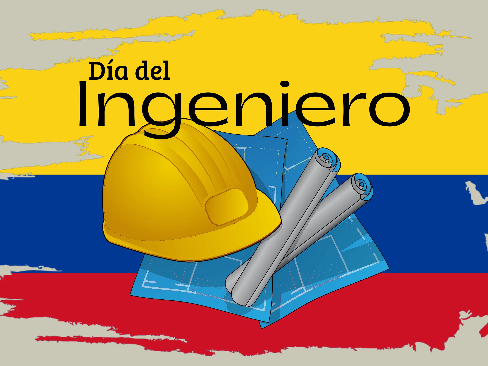

En Colombia, el 17 de agosto se celebra el Día del Ingeniero. Esta fecha se instituyó para reconocer la importancia de los profesionales que contribuyen al progreso social, económico y tecnológico del país.
La ingeniería en Colombia ha tenido un papel fundamental en el desarrollo de grandes obras de infraestructura, la expansión de las telecomunicaciones y la formación de nuevas generaciones de profesionales que impulsan la innovación.
